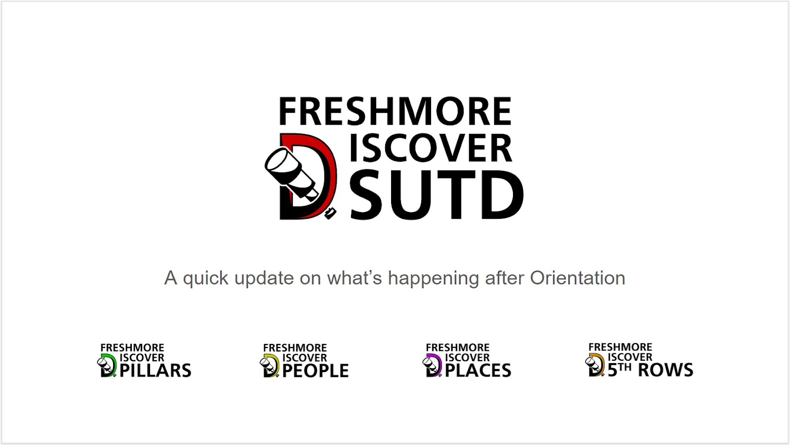
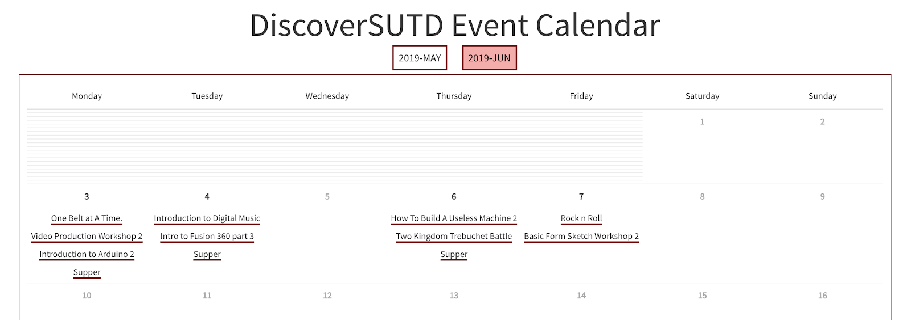

DiscoverSUTD is a 3 week long introduction to the SUTD community. It will last from 22nd May - 7 June 2019. This event collaboratively brought to you by the various Fifth Rows, faculty, pillars, housing, and research labs.
The main event page serves as the starting point for your SUTD journey. Within this page, there is a community calendar, session sign ups and speaker biographies for our flagship event, the SUTD Human Library.
Now before you continue, you are highly recommended to bookmark this page! This guide will be updated continuously as we receive feedback throughout the event.
These are the key event highlights of DiscoverSUTD. You're highly encouraged to go for them!
At SUTD, we are one community. A Human Library allows YOU to "borrow" our very own faculty, staff, researchers and seniors for a conversation!
Every single book will have a bio that gives you an idea of what conversation topics you might expect! You can read all bios right here and find out where your favourite book is seated at the event venue (TBC).
SUTD has many labs all around the campus. These labs are usually not accessible due to research work but for one day only, we will be conducting lab tours!
iTrust: research on the development of advanced tools and methodologies to ensure the security and safety of current and future systems in five thrusts:
IDC: The SUTD-MIT International Design Centre engages in a broad range of collaboration and outreach programs with industry, academia and other design research centers and has incubated a growing list of start ups.
DmanD: advances digital manufacturing in a strategic and holistic manner, bringing together modern and emerging technologies (and attendant basic science and engineering) along the digital pathway that will accelerate Ideas-to-Things. We will carry out research that will exploit new design windows enabled by digital manufacturing technologies to create unique, optima, and previously unobtainable products.
Entrepreneurship Centre: We provide support and avenues for entrepreneurship related activities that turn ideas into reality. Our activities range from entrepreneurship education, experiential programs, overseas entrepreneurship exposures, Entrepreneurship capstone, incubation, mentoring, and events around entrepreneurship.
FabLab: The Fabrication Lab (Fab Lab) and its Satellite Fab Labs aim to allow students to design and build virtually "almost anything" with high-performance machines such as Laser Cutting and Engraving systems, 3D Printers, Plastic Injection Molding machines, vertical sanders, Water-jet Machining Centers, Vertical Injection Molding machines, etc.
Our pillar years are where you find your passion.
EPD:
ESD: Peter Jackson, our pillar head, will personally conduct a session at the Data Analytics Lab (1..610 on a transportation game and a hands-on data analytics course using QGIS (geographic information system)
ISTD: Organised in collaboration with 3DC, come by for a Python development course conducted by your very own seniors.
There are 20+ sessions designed just for you! These include:
Take a look at an overview of all 5th row sessions here. You will be able to sign up from that very same link. That's a lot of sessions so we've made an event calendar to help sort them out for you!
At SUTD, we love free food, or as we call it, DSBJ (Don't Say Bo Jio)
To celebrate the start of your SUTD adventure, we're going to be organising supper thrice a week! On each of the days below, proceed to the Multi-purpose Hall (MPH) between 8 and 11 pm to enjoy snacks and make new friends!
There are a great many things going on during the DiscoverSUTD period. Hence, we've prepared an event calendar to help you get a bird's eye view of what exciting activities are happening on each day!
The calendar can be accessed at https://discover.sutd.dev/calendar/. When you go to the URL, you should see this:

By clicking on the event name, you will be brought to the event abstract where you can find out more and sign up for the event itself.
Food is one of the things that matter to us the most! Within the school, there are a few eateries that students go to if they fancy something outside the canteen.
A couple of restaurants at Changi City Point (CCP) offers food at prices that are friendlier for students. CCP is within walking distance, one MRT stop away (Expo MRT). There is also a shuttle bus that runs at 30 minute intervals (starting at 11:15am and ending at 7:45pm).
Jewel@Changi Airport (closest thing to paradise itself)
Blogs such as TheSmartLocal, TimeOut, and DanielFoodDiary have written so much about Jewel. Guess what? We're literally two MRT stops away! If we were to list the number of restaurants it would take up the rest of the page... so we'll leave you to explore it yourself!
For some reason the fan causes lowered blinds near the room door to rattle continuously. Tape them down for a good night's sleep!
Aircon tips?
https://manualsbrain.com/en/manuals/1522851/ (page 22 and 57 in particular :3)
After some time in school, you would realise that rooms in our school are often referred to using code numbers (e.g. 2.506). Here's a quick breakdown of what this code means to ease getting yourself around:
Spaces to work after class are not limited to your cohort classrooms. Here is a quick list of alternatives that are used by your seniors:
Congratulations! You have reached the end of this guide.
Hope you enjoy your very own DiscoverSUTD adventure!
Wish you the best of luck!